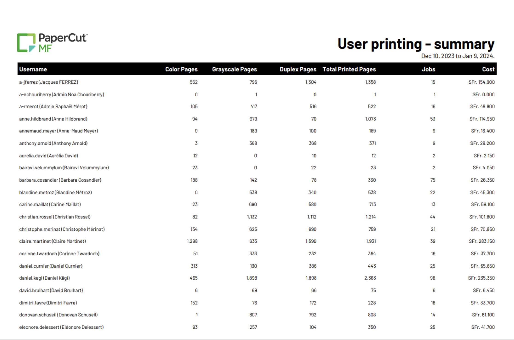
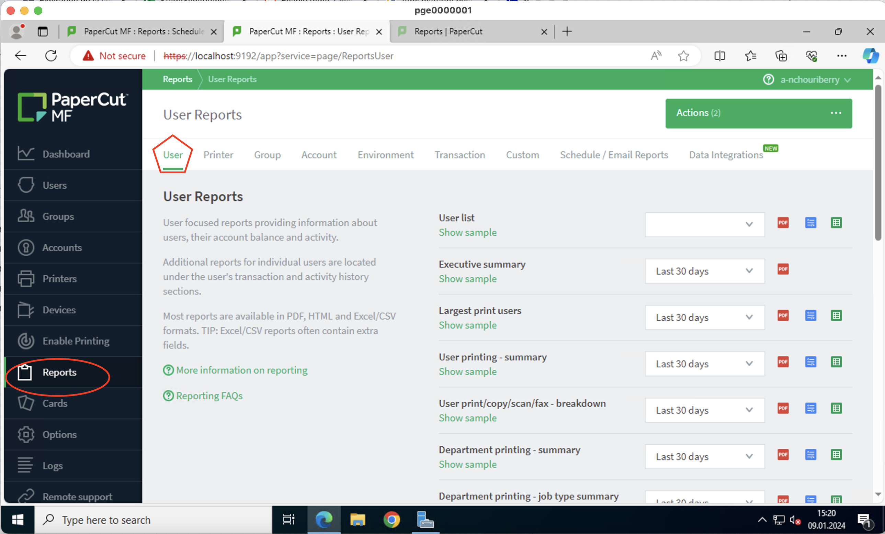
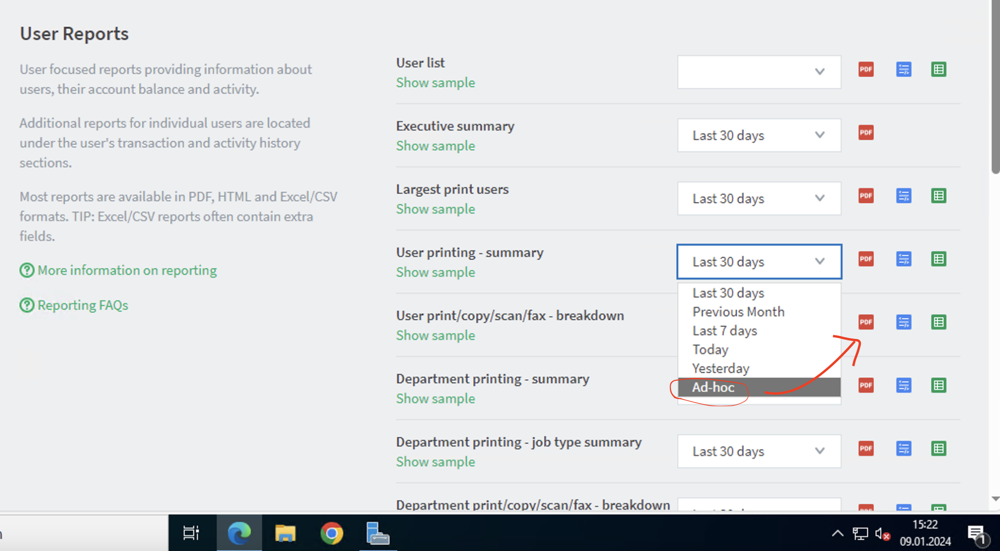
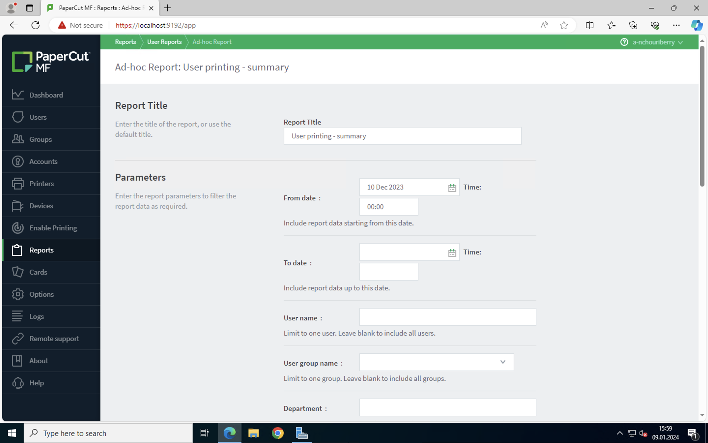
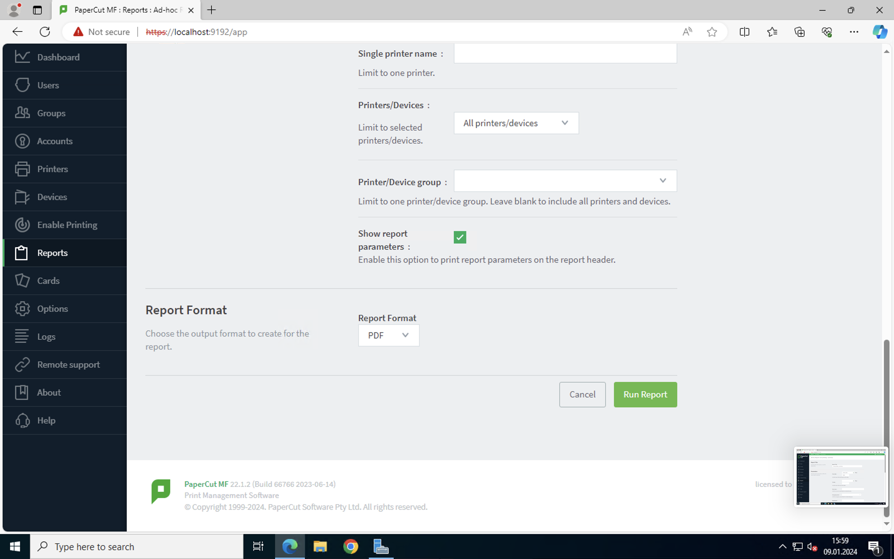
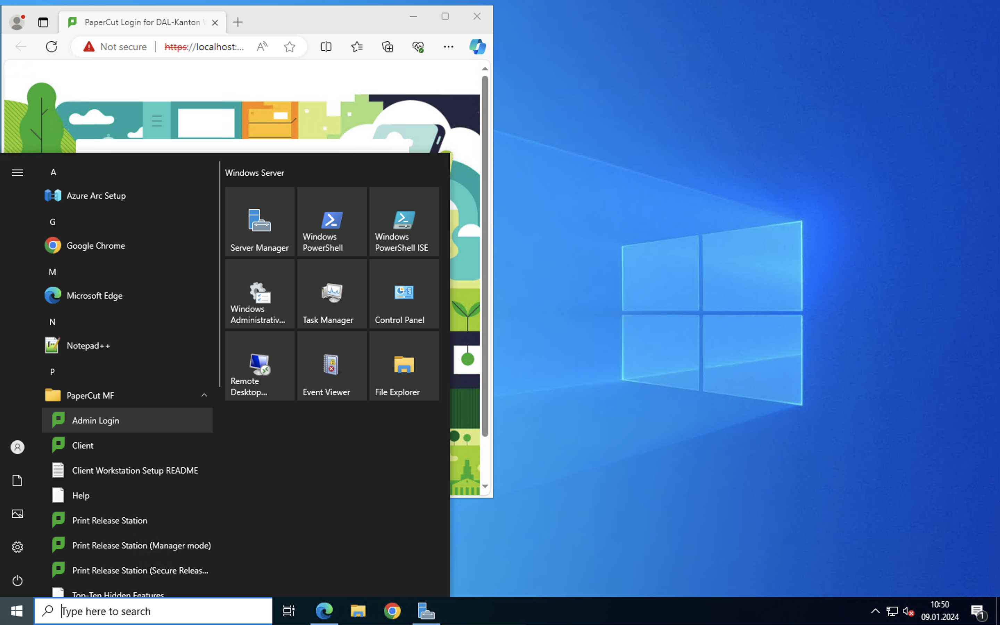
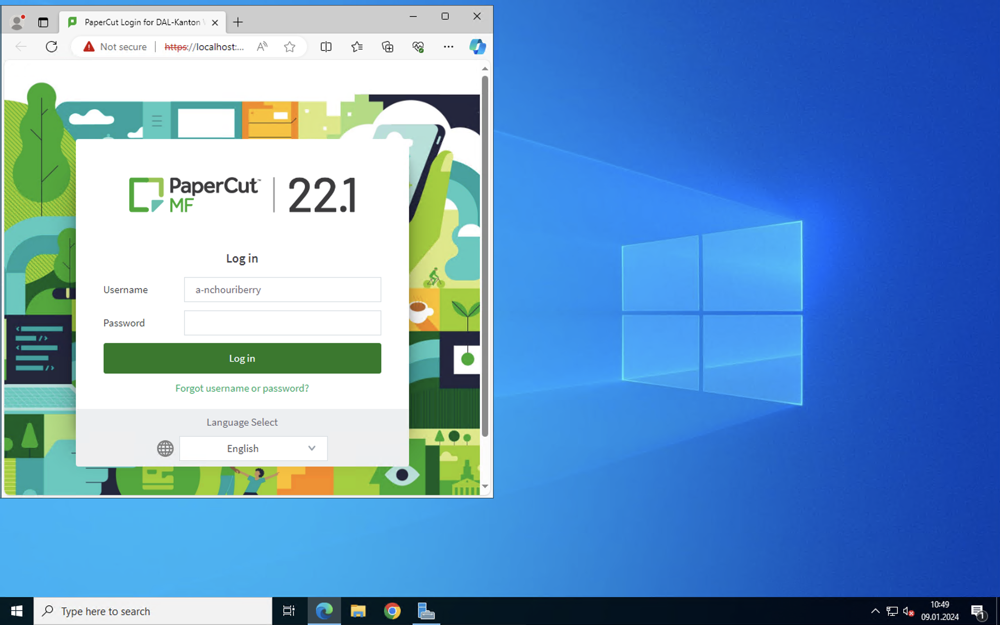
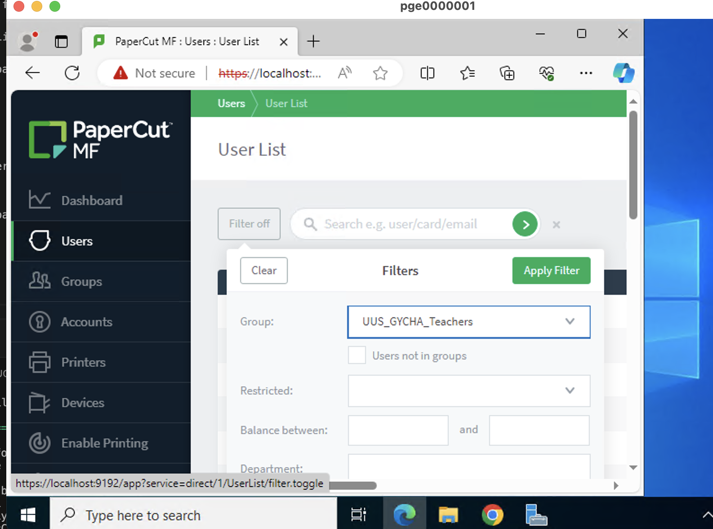
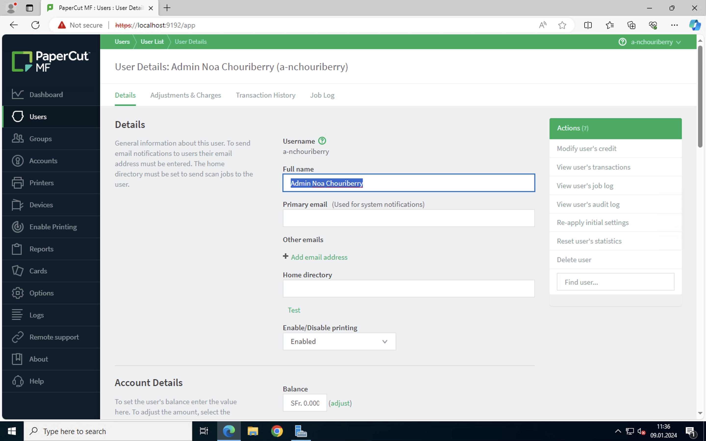
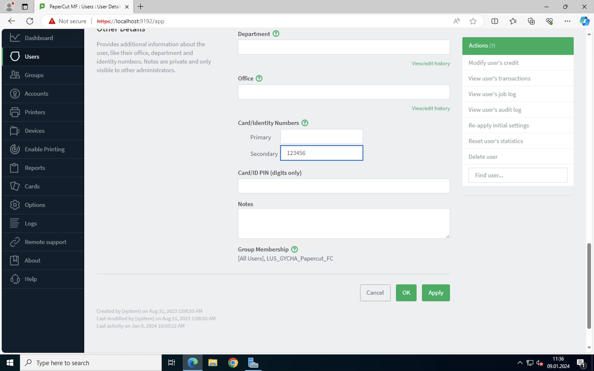

Problèmes et solutions PaperCut#
Cette page vous sera utile si vous recherchez de l’aide concernant PaperCut.
Générer un rapport des impressions PaperCut par utilisateur (profs/élèves)#
Si vous voulez générer un rapport comme celui ci:(voir screenshot)
{kind=link}
Il faut être connecté à PaperCut, puis aller dans Reports et aller vers User Printing - Summary:
{kind=link}
Ensuite, il faut choisir “ad-hoc” dans le menu déroulant et cliquer sur le petit logo “pdf” pour pouvoir exporter le rapport
{kind=link}
Vous vous trouverez sur cette page:
{kind=link}
Vous pouvez choisir la période sur laquelle imprimer un rapport, définir un groupe d’utilisateurs, le type de job d’impression (copie, photocopie..), définir les imprimantes sur lesquelles avoir des informations.. et le format du rapport (pdf, html ou csv).
Pour exporter le rapport, il faut cliquer sur Run Report en bas de la page.
Vous vous trouverez sur cette page:
{kind=link}
Comment retrouver le code PaperCut d’un élève#
Pour commencer, il faut se connecter au serveur papercut (pge000001) depuis Microsoft Remote Desktop:
Ensuite, il faut cliquer sur le logo Windows, aller au dossier PaperCut MF et ouvrir Admin Login:
Ca va vous rediriger vers une page web, il faudra ensuite entrer vos identifiants admin pour vous connecter au panel PaperCut
Après, il faut aller dans Users > cliquer sur “Filter off” (sera surement filter ON) et mettre comme filtre le groupe UUS_GYCHA_Teachers si vous voulez connaître l’identifiant d’un professeur ou le groupe UUS_GYCHA_Students si vous cherchez le code d’un élève, puis appuyer sur Apply Filter.
Après vous aurez la liste des profs/élèves qui sont dans le groupe que vous avez renseigné. il vous suffira de chercher son nom/prénom/identifiant eduvaud dans la barre de recherche. Dés que vous avez trouvé la personne que vous cherchez, il faut cliquer dessus et vous aurez toutes ses informations:
Maintenant, il faut aller tout en bas de la page et vous aurez une section “Card/Identity numbers”, le deuxième nombre à 6 chiffres est l’identifiant PaperCut de l’utilisateur.
